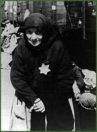

|  | |||
| When Budapest was liberated in January 1945, most of the 120,000 Jewish survivors in Hungary were in that city. According to reliable estimates, the total number of Jews who perished under Hungarian rule was around 570,000. Thus, the figure of 600,000 victims remains as solid evidence for the magnitude of the Holocaust despite attempts to present lower figures. | |||